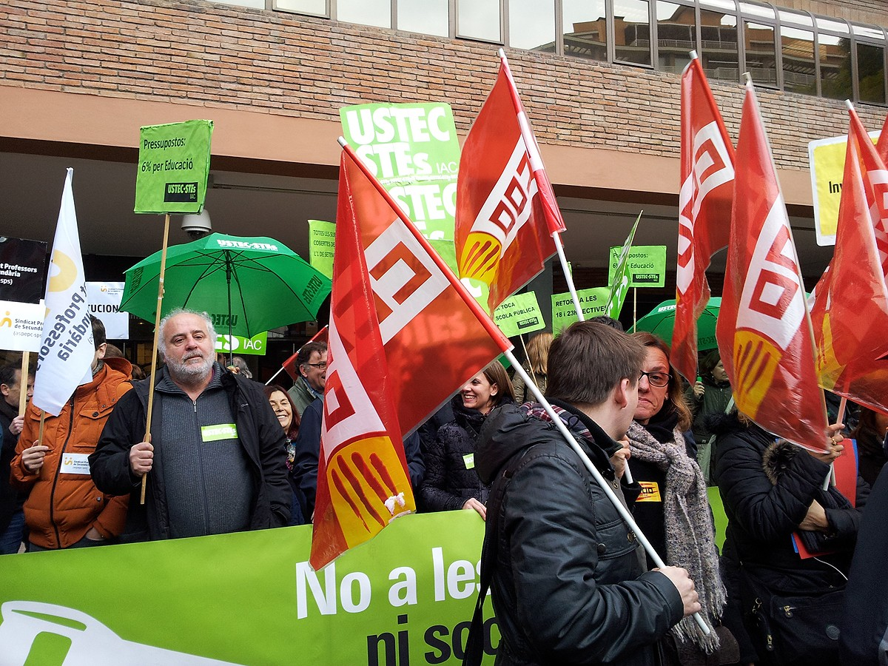

Persecució política; vulneració de drets civils fonamentals; detencions a alts càrrecs; entrades múltiples a les institucions catalanes; desplegament policial, militarització del país; abús de la força; i una llarga llista conforma el que es va viure ahir al Principat de Catalunya.
L’escala repressiva per part de l’Estat Espanyol va a la alça, un Estat que està disposat a posar el Principat en estat d’excepció per impedir baix qualsevol concepte el dret d’autodeterminació del poble català: un autèntic cop d’estat.
El nostre poble, però, un cop més no ha estat immòbil i ha sabut ser l’altra cara de la moneda. Ha demostrat estar unit i no ha volgut cedir ni un pam davant la defensa del referèndum, dels drets i de les llibertats guanyades. Milers i milers de persones hem omplert les places, carrers i barris com a resposta a l’actuació de l’Estat. I no ho han fet soles: les estudiants hi érem. Érem a Olot quan desobeïem per sortir del instituts i concentrar-nos. Érem als instituts de Girona quan organitzavam concentracions multitudinàries. Érem al Carrer Major de Lleida sota els crits “els carrers seràn sempre nostres”. I érem a Tàrrega amb tot de pancartes alçades.
Som al costat del poble perquè qui lidera aquest procés de ruptura és el poble als carrers i, en concret, el jovent i les estudiants com a moviment clau en la construcció d’un nou model de país i sistema educatiu propi. En aquest context, però, totes aquestes estudiants organitzades de secundària no podràn exercir el seu dret a vot: i nosaltres ho farem per elles. Ho farem per la seva lluita contra la LOMQE i l’espanyolització de l’educació secundària, ho farem per la seva lluita continuada contra la massificació de les aules, ho farem per la seva capacitat de teixir moviment estudiantil i juvenil als seus pobles i barris. Perquè ells elles són el futur.
És per tot això, i perquè entenem que ens trobem d’avant un escenari en el què serà la mobilització popular i constant la que ens permetrà guanyar el referèndum i la República i perquè creiem que són totes aquestes joves i estudiants les que han de ser la punta de llança en la lluita per l’alliberament nacional, que des del Sindicat d’Estudiants dels Països Catalans convoquem a un VAGA GENERAL EDUCATIVA als CENTRES EDUCATIUS DE SECUNDÀRIA pel propers 27 i 28 de setembre.
Ara ens toca a nosaltres: estudiant, organitza’t, mobilitza’t: suma’t a la vaga.
